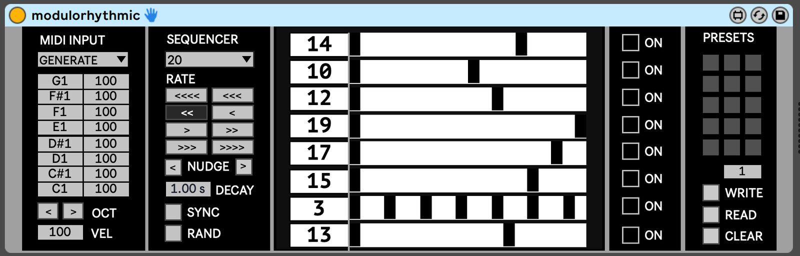
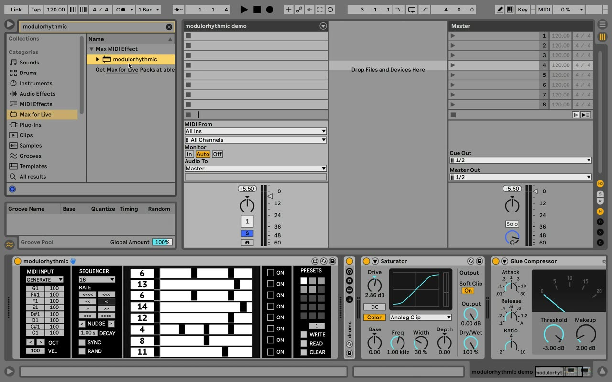

Proof of Identity
Project Description
About a decade ago, I made a piece of electronic music and titled it "Middle Eastern IDM" for a course assignment. After listening to it in class, my professor asked what was Middle Eastern about it. It was only a year after I had left Iran to study in the US, and I didn't know that I could say "I am. I made the piece". So I went back and superimposed a sample of Egyptian protest chants on top of the piece, to make it "sufficiently Middle Eastern".
What prejudiced conservatism and performative liberalism share is gatekeeping practices that box one in a preconceived state of otherness. While the former overtly regards that otherness as inferior, the latter exoticises it through patronising paternalism. To me, it is especially troubling when exclusionary practices are driven by some form of "diversity/inclusion" agenda. If you don't fit the diversity box they've made for you, too bad. It's your fault for being "insufficiently diverse". "Poor thing, you've been colonised!", they tell you, as they claim ownership over a collection of frequencies, rhythms, tools, or techniques. When you look at who gets to decide if something's indigenous enough, you see how decolonisation itself has been colonised.
When listening to this work, you can keep in mind that it was made by someone from Iran. But I should clarify that this piece has no intentional connections to the patterns of the Persian carpet or the poetry of Rumi. And those moments of "non-western" sonorities reflect the fact that the work has been developed using a custom-designed Max/MSP instrument that completely deconstructs a piece of traditional Iranian music and puts it through multi-layered transformational processes to produce entirely new timbral, temporal, and formal material. So in short, while this piece might not sound like the archetypical Iranian music, I assure you that it is Iranian enough.
Type of submission
Option 1: The work has been produced using a new software instrument: a custom-built Max4Live sequencer that uses modulus to produce interlocking patterns across multiple voices.
Brief Program Notes
In 2011 I made a composition for a course and titled it "Middle Eastern IDM". After listening to, my professor asked what was Middle Eastern about it. It was only a year since my migration the US and I didn't know that I could say "I am". Instead, I went back and superimposed samples of Egyptian protest chants on top of the piece, to make it "sufficiently Middle Eastern".
It is troubling when exclusionary practices are driven by some form of "diversity/inclusion" agenda. If you don't fit the diversity box that's made for you, it's your fault for being "insufficiently diverse". "Poor thing, you've been colonised!", they tell you, as they claim ownership over a collection of frequencies and rhythms. Looking at who gets to decide if something's indigenous enough, it seems like decolonisation itself has been colonised.
This work has no clear connections to the patterns of the Persian carpet or Islamic architecture. Developed using a custom-designed Max/MSP instrument, the piece deconstructs a piece of traditional Iranian music and puts it through multi-layered transformations to produce entirely new sonic material. So while it might not sound like the archetypical Iranian music, it certainly is Iranian enough.
Media
Proof Of Identity (short A/V excerpt)
 ▶
▶Proof Of Identity (short A/V excerpt)
Proof Of Identity (complete audio):
Proof Of Identity (complete audio version)
modulorhythmic: custom-designed M4L instrument:


Demo video of the instrument’s functionality:

▶Ethics Statement
Information on how matters of accessibility, inclusion and sustainability have been addressed in their work.
Information on how matters of sustainability have been addressed in their work
Information regarding sources of funding
Potential conflicts of interest (financial or non-financial)
Inclusion: I’m an Iranian artist / music technologist and I am directly addressing the very issues of inclusion and colonisation that I’ve been battling with during a decade of living and working in the West. A critical take on diversity/inclusion box-ticking practices is central to my submission.
Sustainability: In a sense, this piece is based on total sonic recycling. It has been entirely developed using a custom-designed Max/MSP patch. The patch completely deconstructs a piece of Persian music and puts it through multi-layered transformational processes in producing entirely new timbral, temporal, and formal material.
Accessibility: The artistic output is a piece of audio and all technical jargon is removed from the project statement. Instead, the work aims to connect with the audience at a very real, personal level.
Funding: The work was commissioned by Pyramid Club (NZ).
Conflict of Interest: I know and/or have worked with some of the NZ-Based conference organising team.
Acknowledgements
I would like to thank Jonny Marks for his invitation to produce this work, and the fruitful conversations that helped form the idea behind the piece.
This work is supported by Pyramid Club (NZ).